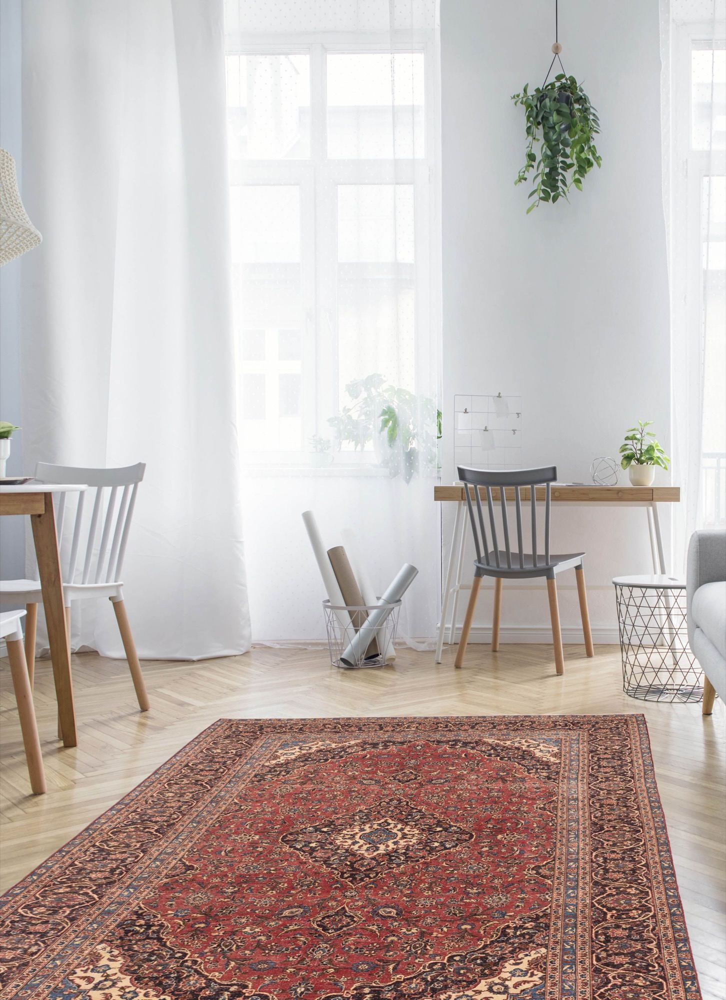
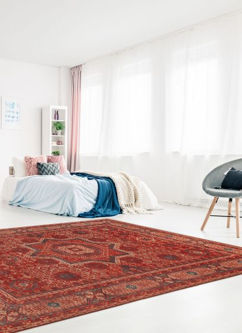
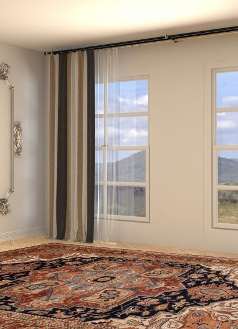
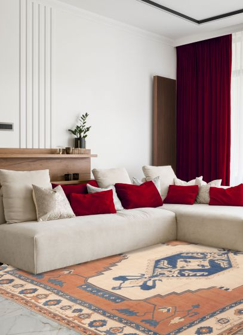

Traditional Rugs
Traditional Rugs in Portland, Oregon
Traditional rugs at Zagros Rugs celebrate intricate borders, central medallions, floral details, and heritage weaving inspired by Persian, Turkish, Kurdish, and Oriental rug traditions. These hand-selected rugs add depth, formality, and enduring beauty to Portland interiors.
Ask About This Collection
Available styles
Traditional Rugs gallery



